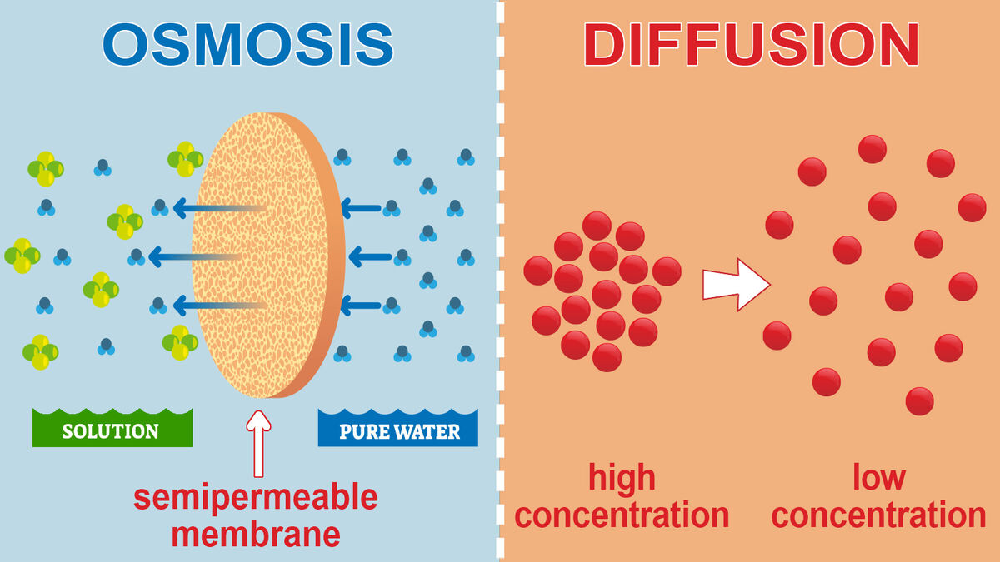
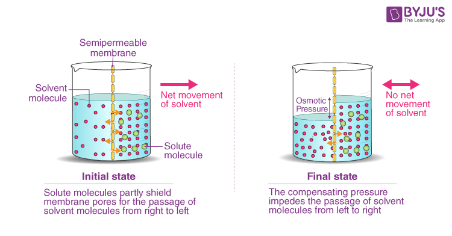

Water is crucial for plant life because it serves as a universal solvent dissolving essential substances
for various processes.
It facilitates the transport of nutrients and minerals from the soil to the plant's parts through the roots,
and is a key component in photosynthesis.
Water also acts as a medium for biochemical reactions within plant cells and helps maintain turgor pressure,
ensuring proper cell function and growth.
Here's a more detailed look at water's importance:
Nutrient Transport:
Water dissolves minerals and nutrients from the soil, allowing plants to absorb them through their roots.
These dissolved nutrients are then transported throughout the plant via water, ensuring all parts have access
to the essential substances needed for growth and development.
Diffusion:
In plant water relations, diffusion plays a crucial role in the movement of water and other solutes across cell
membranes. Water moves from areas of high water potential (or low solute concentration) to areas of low water potential
(or high solute concentration), a process driven by the diffusion pressure deficit, according to embibe.
This movement is essential for maintaining turgor pressure, cell hydration, and nutrient transport within the plant.
Here's a more detailed explanation:
1. Water Movement:
Diffusion:
Water moves across cell membranes and through the plant's tissues via diffusion, following a concentration gradient,
from areas of high water potential (more water) to areas of low water potential (less water),
Water Potential:
Water potential is a measure of the relative tendency of water to move into or out of a cell or tissue,
influenced by factors like solute concentration and pressure.
Diffusion Pressure Deficit (DPD):
The difference in pressure between a solution and pure water at the same temperature is called the diffusion pressure deficit.
A higher DPD indicates a greater tendency for water to move into the cell.

osmosis
Osmosis is the natural movement of a solvent (like water) through a semipermeable membrane from an area of
low solute concentration to an area of high solute concentration, according to Hydramem. This movement
aims to equalize the solute concentrations on both sides of the membrane. Essentially, water moves to
dilute a more concentrated solution.
Here's a more detailed explanation:
Semipermeable Membrane: This is a barrier that allows certain substances, like water, to pass through but
prevents others, like larger solute molecules, from passing.
Solute Concentration: The amount of dissolved substances (solutes) in a solution.
Natural Movement: Osmosis occurs naturally without any external force.
Equalizing Concentrations: The goal of osmosis is to bring the solute concentrations on either side of the
membrane into balance.
Osmotic Pressure
In botany, osmotic pressure refers to the minimum pressure needed to prevent the movement of solvent molecules, like water,
across a semipermeable membrane. It's a crucial concept in plant physiology, influencing processes like water uptake,
nutrient transport, and turgor pressure, which affects plant cell firmness and wilting.
Elaboration:
Definition:
Osmotic pressure is the pressure exerted by a solution against a semipermeable membrane, resulting from the
tendency of water to move from a region of lower solute concentration (high water concentration) to a region
of higher solute concentration (low water concentration).
Role in Plants:
Water Uptake: Osmotic pressure drives water movement from the soil into plant roots and then throughout the plant.
Nutrient Transport: It plays a role in the movement of nutrients in the phloem tissue.
Turgor Pressure: The osmotic pressure of plant cells, especially those with a cell wall, helps maintain
Calculation:
Osmotic pressure can be calculated using the van 't Hoff equation (π = MRT), where M is molar concentration,
R is the ideal gas constant, and T is temperature.

osmotic potential
In botany, osmotic potential, also known as solute potential, refers to the negative impact of dissolved solutes
on a plant cell's water potential. It essentially describes the tendency of water molecules to move from an
area of lower solute concentration to an area of higher solute concentration, driven by osmosis.
Here's a more detailed explanation:
1. Water Potential and Osmotic Potential:
Water Potential:
Represents the total water potential in a cell or solution, considering factors like osmotic potential, pressure
potential, and matric potential.
Osmotic Potential (Solute Potential):
Specifically refers to the impact of dissolved solutes on water potential, causing it to decrease.